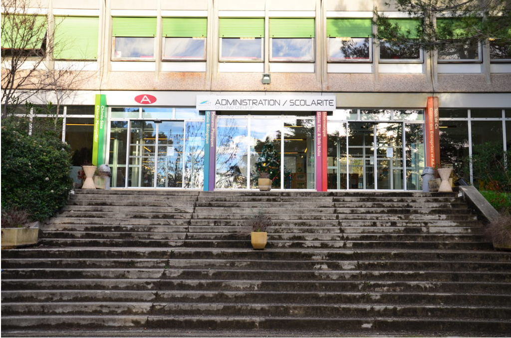
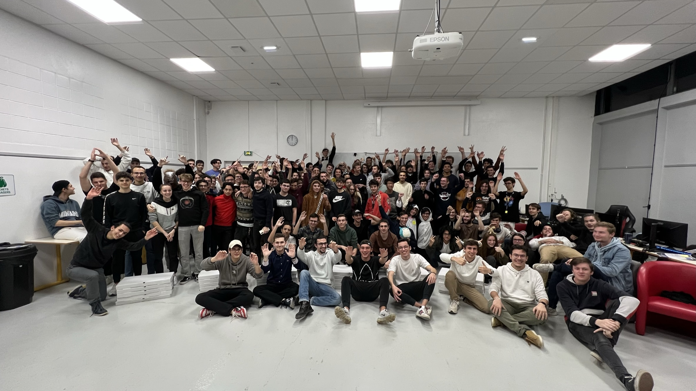
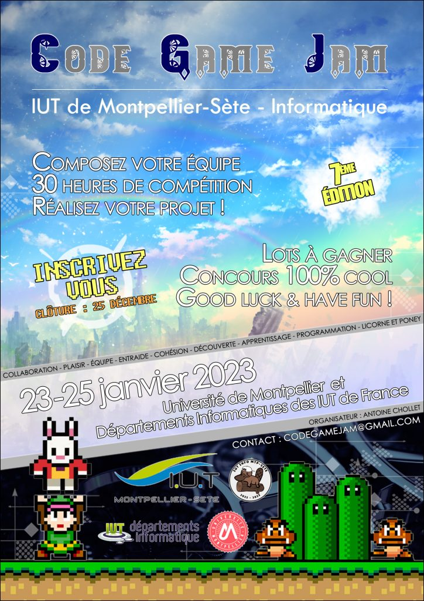

Bonjour, je m’appelle Théo, j’ai 21 ans et je
suis étudiant à l’IUT de Montpellier-Sète
en informatique. En ce moment, je me
lance dans des projets personnels afin
de développer des compétences. J’espère
que vous apprécierez de parcourir mon travail.
About

J’ai commencé à étudié l’informatique au lycée en
python. J’ai commencé à écrire mes premiers
programmes informatiques et j’ai compris que
j’étais passionné par le domaine. Je suis actuellement
étudiant à l’IUT de Montpellier-Sète en 2ème année.
En ce moment, je fais beaucoup du développement web
design avec les technologies
html css
etjavascript
et du developpement coté serveur enphp.
Je cherche toujours un domaine en informatique dans lequel je pourrais me spécialiser dans mon avenir professionnel.
Je suis très curieux de ce domaine que j'ai commencé à participer
à différents événements comme la
nuit de l'informatique
et lacode game jam
. Ces événements sont très riches en apprentissage pratique et m'ont permis d'aborder les problématiques techniques de la réalisation d'une solution informatique dans un délai limité.

Lien du site officiel: https://www.nuitdelinfo.com/
Nuit de l’informatique à Montpellier edition 2022-2023.
Thème: SexInfo, la prévention par le jeu pdf du sujet edition 2022-2023
Lien du site: https://codegamejam.extragames.fr/
Code game jam 7ème edition (2022-2023)
Thème : les maîtres du temps (pour l'instant, aucun lien vers la 7ème edition)
